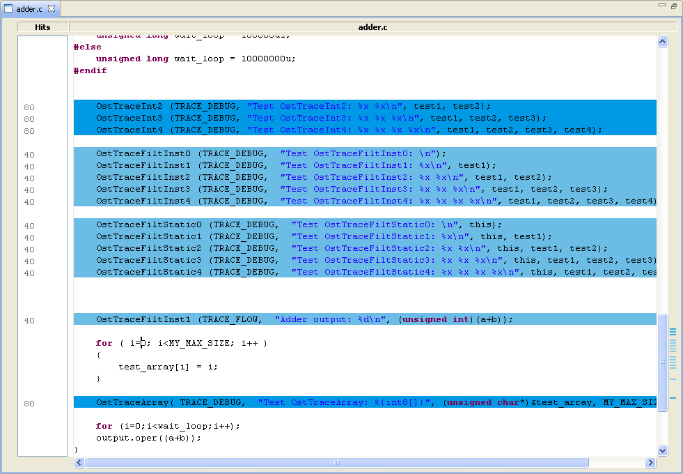
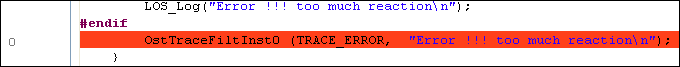

Trace Viewer Workbench
Documentation > References > Source View
|
|
Trace Viewer Workbench Documentation > References > Source View |
[Only for OST frames with dictionaries containing source info]
Description
The source view shows you source files with annotations where the trace files have been emitted. The more the color of a line is intense the more this line has been hit in the trace.

Tips
Colors:
The colors are computed relatively to this source file. The line that is the more blue is the most hit in this source file.
Never hit lines:
Lines that could produces traces but that have never been hit are colored in red. Lines that cannot be hit are not colored (standard white).

|
|
© STMicroelectronics and others 2010, 2011, 2012. All rights reserved. |